::Importance HTML Interviews Questions and Answers::
Ques 1:What is HTML?
OR,Introduction to HTML?
Ans:HTML: HTML stands for Hyper Text Markup Language. It is the standard Markup language used for creating Web Pages and Web Applications.
* The hypertext markup language(HTML) is a computer language used for creating web pages, Which are displayed on world wide web(WWW) it is also known as markup language or tag based language.
* Websites are displayed on browsers and HTML elements guide the browser on how to display the webpage content.
* HTML elements label pieces of content such as "this is a heading", "this is a paragraph", "this is a link", and so on..
* If our websites are buildings then HTML is the most basic building block of the Web Pages.
* HTML (HyperText Markup Language) is a standard markup language for creating web pages and web applications. It is the foundation of the World Wide Web and is used to describe the structure of content in documents, such as headings, paragraphs, lists, links, quotes, and other items.
* HTML defines the structure and Formatting or the outline of the webpage content.
* HTML is not Case Sensitive.
* HTML used for Skeleton.
Ques 2:What are the Advantages of HTML?
Ans:
Easy and simple to use.
Widely supported by almost all web browsers.
The standard language for making the structure of the web pages.
Code is very lightweight, thus providing better speed online.
Free to use. And it can be run on browsers only, so there is no need to buy any external software.
Ques 3:What are the Disadvantages of HTML?
Ans:
Only capable of making static web pages that do not contain any
functionality or dynamic content.
Due to complex and long syntaxes, there are multiple lines of code
required even to make any web component.
There is no feature for syntax error detection. Thus if any error is made while coding, it can only be detected after seeing the output. This could be very harmful if the code is long and complicated.
The security features of HTML are almost none or very limited.
The HTML code is tough to understand and manage.
Ques 4:What is HTML5?
OR,Introduction to the HTML5?
Ans: HTML5 is the latest version of HTML and includes new features that allow web developers to create more interactive and engaging content for the web.
Ques 5:What are the Advantages of HTML5?
Ans:
There are many attributes present in HTML5 that were not present in HTML.E.g., data-, offline, onabort, onblur, etc.
It provides support for audio, video, and other multimedia content by using tags like "audio","video","canvas", etc.
There are many page layout options available in HTML5. In HTML, you can only find page layout tags like div, span, etc. But in HTML5, there are many more tag options available like header, footer, article, section, etc.
HTML5 supports Search Engine Optimisation(SEO). Search engine optimization helps the websites to know about the popularity of their content and also provides insights on how to improve the content to increase the traffic on the websites.
Ques 6:What are the Disadvantages of HTML5?
Ans:
Can only be run on modern browsers. Not compatible with older versions of various browsers, e.g., Google Chrome version less than 60, Mozilla version 2 and 3.6, etc.
There is no standard video format available. For example, H.264 video format is supported by all web browsers but not by Firefox; similarly, the Ogg Theory video format is supported by all web browsers but not by Explorer.
The multi-platform support provided by HTML5 sometimes leads to more
complex code. Also, it becomes necessary to run all web applications in
all formats to check the credibility of the code.
HTML5 is still in the development phase; therefore, it might appear that a few features that worked before are not working now. Thus developers need to stay updated while using HTML5.
Ques 7:What does the full form of HTML5?
Ans: HTML Full Form of Hypertext Markup language.
Ques 8:What is the Extension of HTML5?
Ans: The extension of HTML is .html.
Ques 9:Why HTML is Important for web development?
Ans:Here are few ways to HTML is important for web development:
Structure and layout
Accessibility
Compatibility
SEO (Search Engine Optimization)
Ques 10: Why should to Learn HTML5?
Ans:There are several reasons to learn HTML:
HTML is an essential building block of the web
HTML is easy to learn
HTML is widely used
HTML is versatile
Ques 11:Why HTML is used in many different Contexts/Applications?
Ans:HTML are used in many different contexts/Applications:
Mobile applications
Web applications
Websites
Email
Ques 12:What is Hypertext?
Ans:Hypertext: Hypertext means nothing more than "text in text." Any text that contains a link is known as one of two things - a hyperlink or hypertext. If you click on one of these links, a new web page will open. It is used to link web pages together, ensuring users can easily jump between them.
Ques 13:What is Markup Language?
Ans:Markup Language: Markup languages are computer languages used for applying formatting and layout to a document. These languages ensure that text is more dynamic and interactive. It can be used Annotations/tags into markup content (text, paragraph[p], heading1 to heading6[h1-h6], links[a], tables[tr,td], images[img], and so more.......)
Ques 14:History of HTML5?
OR,The Evolution of HTML5?
OR,Why HTML5 came into this pictures?
Ans: While Tim Berners-Lee was there (CERN), Tim Berners-Lee proposed a system for researchers and, in 1989, he sent a memo containing a hypertext system based on the internet.
*Tim Berners-Lee has earned the moniker of "the father of HTML."In 1991, he produced a document called "HTML Tags" the very first HTML description.
*Tim Berners-Lee was a physicist in the late 80's, contracted to work at CERN (European Organization for Nuclear Research).
Ques 15:Which Versions of HTML is there?
Ans:Several Versions have been released by HTML:
HTML 1.0: HTML 1.0 Released in 1991, this was the first version of HTML and was very basic.
HTML 2.0: HTML 2.0 version was released in 1995 and became the website design standard. It provided support for extra features, including form elements, like option buttons, text boxes, etc., and form-based file uploads.
HTML 3.2: HTML 3.2 W3C (World Wide Web Consortium) released this version early in 1997 and brought support for table creation and more support for new options in form elements. It could also support web pages containing complex math equations. In January 1997, it became the browser standard and, today, it is still supported by most browsers in a practical form.
HTML 3.2: HTML 3.2 W3C (World Wide Web Consortium) released this version early in 1997 and brought support for table creation and more support for new options in form elements. It could also support web pages containing complex math equations. In January 1997, it became the browser standard and, today, it is still supported by most browsers in a practical form.
HTML 4.01: HTML 4.01 The next HTML version came about in December 1999 and proved incredibly stable. it still is today using by most browsers in a practically form. It is the official standard we work with currently and provides support for CSS (Cascading style sheets) and scripting ability for different multimedia elements.
HTML 5: HTML 5 is the latest version and was first announced in January 2008. Two large foundations are involved in HTML 5 development. (a)World Wide Web Consortium (W3C) and (b)Web Hypertext Application Technology Working Group (WHATWG) and, today, it is still being developed.
Ques 16:What are the HTML5 features? Explain in details?
Ans:There are so many various features available in HTML5:
It is one of the easiest languages to understand and modify.
Making effective presentations with HTML is easy because it offers tons of formatting tags.
Because it is a markup language, it gives users a flexible way of designing web pages with text.
It allows users to add links on web pages using the anchor tag, thus enhancing the user's browsing interest.
It is not dependent on any specific platform and can be displayed on Windows Linux, Mac, and all others.
It allows programmers to easily add sound, videos, and graphics to their pages, ensuring they are more interactive and attractive.
It is not case sensitive like other languages, so tags can be used both lower and uppercase. However, the recommendation is to use lower-case for readability and consistency.
Ques 17:How to download Visual Studio (VS) Code Editor (IDE)? Explain in Steps-by-Steps with practically?
Solution:
#Download Visual Studio Code Editor Instructions:
Step1: Visual Studio Code Editor Download from Google Chrome.
* Follow this YouTube Link Download and Install for Visual Studio code Editor on Windows OS. link given in below:
Step 3: You can click any of the icons mentioned below (Windows, Linux, Mac) depending on the operating system for which you are planning to download the visual studio code editor.
Step 4: When the download finishes, then the Visual Studio Code icon appears in the downloads folder in File Explorer.
Ques 18:How to install Visual Studio (VS) Code Editor (IDE)? Explain in Steps-by-Steps with practically?
Solution:
# Installation Visual Studio Code Editor Instructions:
Step 1: Click on the installer icon to start the installation process of the Visual Studio Code Editor.Go to This PC and go to the inside Download folder and see the VSCodeUserSetup-x64-1.6 5.0 .
Step 2: After the Installer opens, it will ask you for accepting the terms and conditions of the Visual Studio Code. Click on I accept the agreement and then click the Next button.
Step 3: Choose the location data for running the Visual Studio Code. It will then ask you for browsing the location. Then click on Next button.
Step 4: Again then click on Next Button.
Step 5: In Select Additional Tasks inside the click on that check box “Add to PATH (requires shell restart)” and click on that check box “Create a desktop icon” and after click on that “Next” button.
Step 6: Again then it will ask for beginning the installing setup. Click on the Install button.
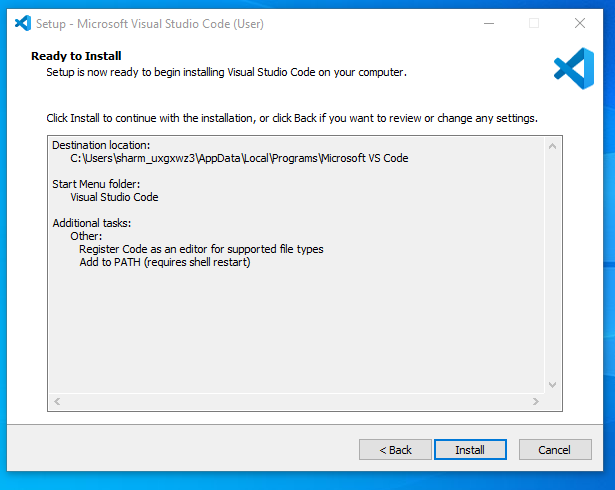
Step 7: After clicking on Install, it will take about 1 minute to install the Visual Studio Code on your device.
Step 8: After the Installation setup for Visual Studio Code is finished, it will show a window like this below. Tick the “Launch Visual Studio Code” checkbox and then click Next.
Step 9: the Visual Studio Code Editor open successfully. Now you can create a new folder/file in the Visual Studio Code Editor and choose any language of yours to begin your programming
journey!
By default, Visual Studio Code Editor installed Successfully.
Ques 19:What is Visual Studio (VS) Code Editor (IDE)?
Ans:
* Visual Studio Code is a streamlined code editor with support for development operations like debugging, task running, and version control. It aims to provide just the tools a developer needs for a quick code-build-debug cycle and leaves more complex workflows to fuller featured IDEs, such as Visual Studio IDE.
* The Visual Studio IDE is a creative launching pad that you can use to edit, debug, and build code, and then publish an app. Over and above the standard editor and debugger that most IDEs provide, Visual Studio includes compilers, code completion tools, graphical designers, and many more features to enhance the software development process.
* Visual Studio Code includes built-in JavaScript IntelliSense, debugging, formatting, code navigation, refactorings, and many other advanced language features. Most of these features just work out of the box, while some may require basic configuration to get the best experience.
* IntelliSense shows you intelligent code completion, hover information, and signature information so that you can write code more quickly and correctly. VS Code provides IntelliSense within your JavaScript projects; for many npm libraries such as React, lodash, and express; and for other platforms such as node, serverless, or IoT.
* VS Code uses online services for many other purposes such as downloading product updates, finding, installing and updating extensions, or providing natural language search within the Settings editor.
* Visual Studio Code is a lightweight but powerful source code editor which runs on your desktop and is available for Windows, macOS and Linux. It comes with built-in support for JavaScript, TypeScript and Node.js and has a rich ecosystem of extensions for other languages and runtimes environment (such as C++, C#, Java, Python, PHP, Go, .NET) and more...
* Visual Studio Code runs on macOS, Linux, and Windows.
* VS Code is free for private or commercial use.
Ques 20:Why should developers and students use the Visual Studio (VS) Code Editor (IDE)?
Ans:
* For 90% or more developers and Students, VS Code is a better choice for solving the never-ending debate of Visual Studio vs Visual Studio Code.
* VS Code is comparatively much faster than Visual Studio. It can boot up faster when compared to IDE.
* Visual Studio Code is incredibly flexible. It can do pretty much anything a developers and Students wants it to do.
* When it comes to heavy-duty code analysis, debugging as well as performance profiling, Visual Studio is an incredible option.
* Visual Studio Code is the best choice for web development. It offers incredible support with thousands of tools and extensions willing to work in your favour.
* Development containers with Visual Studio Code can serve as a fantastic tool in education to ensure students have a consistent coding environment. They take care of setup so that students and instructors can quickly move past configuration, and instead focus on what's truly important: learning and coding something great!
Ques 21:Who released/ invented Visual Studio (VS) Code Editor (IDE)?
Ans:
* Microsoft first released / invented Visual Studio (codenamed Boston, for the city of the same name, thus beginning the VS codenames related to places) in 1997, bundling many of its programming tools together for the first time.
* Visual Studio Code is a lightweight but powerful source code editor which runs on your Systems and is available for Windows, macOS and Linux. It comes with built-in support for JavaScript, TypeScript and Node.js and has a rich ecosystem of extensions for other languages and runtimes environment (such as C++, C#, Java, Python, PHP, Go, .NET) and more...
Ques 22:What are the purpose of Visual Studio (VS) Code Editor (IDE)?
Ans:The main purposes of Visual Studio Code as a code editor include:
Code Editing: VS Code provides a rich set of features for writing and editing code, including syntax highlighting, code completion, and code formatting. It supports a wide variety of programming languages and file types, making it versatile for different development tasks.
Customization: VS Code is highly customizable, allowing developers to tailor the editor to their preferences. You can install extensions to add new features, themes to change the editor's appearance, and keybindings to customize shortcuts.
Integrated Terminal: VS Code includes an integrated terminal that allows developers to run command-line tools and scripts directly within the editor. This streamlines development workflows by reducing the need to switch between the editor and the command line.
Version Control: VS Code has built-in support for version control systems like Git. You can view and manage Git repositories, commit changes, and perform various version control tasks without leaving the editor.
Debugging: VS Code supports debugging for various programming languages and platforms. You can set breakpoints, inspect variables, and step through your code to identify and fix issues.
Extensions Ecosystem: VS Code has a vast ecosystem of extensions created by the community. These extensions add functionality for different programming languages, frameworks, and tools, allowing you to customize the editor for your specific needs.
IntelliSense: VS Code's IntelliSense feature provides intelligent code suggestions as you type, helping you write code more efficiently and with fewer errors.
Task Automation: You can define and automate development tasks using tasks and build systems in VS Code. This can be particularly useful for building, testing, and deploying your projects.
Collaboration: VS Code supports real-time collaboration through extensions like Live Share, enabling multiple developers to work together on the same codebase, even if they are geographically separated.
Accessibility: Visual Studio Code is designed with accessibility in mind, making it usable for developers with different abilities.
Cross-Platform: VS Code is available on multiple operating systems, including Windows, macOS, and Linux, making it accessible to a wide range of developers.
Ques 23:What are the benefits of Visual Studio (VS) Code Editor (IDE)?
Ans:There are various benefits of Visual Studio Code Editor (IDE):
Visual Studio Code or VS Code is a text editor that offers multiple customization features in the form of plugins for developers to curate a pretty selective development environment. VS Code is lightweight and powerful and can be easily installed on any platform.
VS Code has built-in support for Node.js, TypeScript, and JavaScript and a feature-rich extension ecosystem for different languages like C++, Java, C#, PHP, Go, and Python.
A developer branching out of .NET or C# into different comment stacks will be the ideal candidate for VS Code. It will also benefit those starting their journey of being a developer from scratch!
VS Code is centered around ease, extensibility, speed, and flexibility.
Ques 24: Why VS Code ?
Ans:
VSCode is the most popular code editor developed by Microsoft.
It is simple and free for use.
It is available for various operating systems be it windows, mac or linux. Many developers use it for various development tasks.
It has a large user base.
Community support is good, if any issues are found it can easily be found on the internet.
Ques 25:How to Setting up the first folder and file in HTML5 on VS (Visual Studio) Code Editor (IDE)?
Ans:
Step 1: Create a project folder, like the First Program folder then click on File -> Open Folder -> Select your project folder.
Step 2: Create a new file. Click on the button shown and choose a name for your file and give the extension as .html Here we have named it “main.html" already.
Step 3: Getting the boiler plate code (optional). On VS Code click on “! + tab” to get the boilerplate code or simply type it yourself in the html file for better practice at early stages of coding.
Ques 26:List all the tools you might use as a developer?
Ans:
Visual studio code
Turbo c++
IntelliJ IDEA
Python
Notepad ++
Ques 27:What does a basic building web pages look like in html? In below given Syntax, Example, Output?
OR,What does a basic Boilerpalate Code building Web Pages look like in html? In below given Syntax, Example, Output?
Ans:Web Pages: Web pages are documents that are usually written in HTML, and a web browser is then used to translate them. We access and identify these web pages using URLs, the address where the web page is located on the internet, and they can be dynamic or static. The only language that can be used to create static web pages is HTML.
* All of that means that the HTML language is used to create nice-looking web pages by using styling and showing them on a web page in a nice format.
* HTML documents comprise multiple tags, each tag having different content.
* Go to Visual Studio code create index.html after doing shift + ! + Enter Automatically showing Emmet abbreviation (Boilerpalte code).
#Let's put all this into context by looking at a simple HTML Syntax:
#Let's put all this into context by looking at a simple HTML Example/Codes:
#Let's put all this into context by looking at a simple HTML Output:
The !DOCTYPE html declaration defines/represents this document is an HTML5 document.
The html element is the root element of an HTML page.
The head element contains meta information about the HTML page.
The title element specifies a title for the HTML page (which is shown in the browser's title bar or in the page's tab).
The body element defines/represents the document's body, and is a container for all the visible contents, such as headings, paragraphs, images, hyperlinks, tables, lists, etc.
The h1 element defines/represents a large heading.
The h6 element defines/represents a small heading.
The p element defines/represents a paragraph.
Ques 28:What Extensions are required for HTML code on Visual Studio (VS) Code Editor?
Ans:There are so many Extensions uses for HTML. Mention in below:
Live Server (Ritwick Dey)
Prettier - Code formatter (Prettier)
HTML CSS Support (ecmel)
Material Icon Theme (Phillip kief)
Path Intellisense (Christian Kohler)
Eslint (Microsoft) - This extension for using JavaScript
Ayu (teabyii)
Cobalt 2 Theme Official (Wes Bos)
Intellicode (Microsoft)
Auto Close Tag (Jun Han)
Auto Rename Tag (Jun Han)
Ques 29:Why do we write first file name index.html?
Ans: It is just a name that came to stay. originally it served the purpose of indexing the files in a web server directory. Now it is the default file the server looks for when in a directory. the order of default files to look for can be customized in the server settings.
Ques 30:How to write the First "Hello World" code in HTML on Visual Studio (VS) Code Editor (IDE)?
Ans:In below given First "Hello World" code in HTML and Output:
Ques 31: What are the tag, Opening tag, Closing tag, elements, and Contents in html? Give Syntax, examples of all these?
Ans:
tags:
* The component used to design the structure of websites are called HTML tags.
* tags are always enclosed in angle brackets or forward slash:< > or / .
* A tag is composed with special characters: < , > and /. They are interpreted by softwares to compose an HTML element.
* Every tag in HTML perform different tasks.
* HTML tags are always written in lowercase letters.
Opening tag:
* For opening a simple element with a start tag.
It starts with opening angle bracket < .
Then a list of characters without space, the tagname or element.
<_>
Closing tag:
* Then closing the simple element with an end tag.
It starts with closing angle bracket /> .
Then the same list of characters without space, the tagname or element.
Elements:
* Standard Elements that browser recognizes.
* HTML elements are the individual components that make up a web page, such as headings, paragraphs, images and so more..
* HTML elements usually come in tag pairs.
Contents:
* A container for some content or other tags.
* Only the content inside the "body Opening tag" and "body closing tag" are displayed in the browser. It is also called as Content / (Container) tag.
#Syntax of Element:
#Example of Element are:
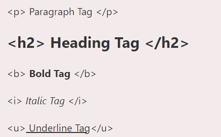
Ques 32:What is the self closing tag / Empty tag / Non-Container tag? Explain the Syntax with Examples?
Ans: Some elements do not have an ending tag (because they are implied by the following tag). It is called as Self-closing / Empty-tag / Non-Container tag.
* Self-Closing tag also called as Empty-tag or Non-Container tag.
NOTE: Some HTML elements have no content (like the "br" element). These elements are called empty elements. Empty elements do not have an end tag!
Ques 33:What is Lorem in HTML? Give the Example of Lorem?
Ans: Lorem is called facts text and dummy text of html.
#Example in Lorem:
Ques 34:What are the basic building blocks of HTML?
Ans: The basic building blocks of HTML are tags, which are used to structure and define the content of a web page.
Ques 35:What is the DOCTYPE declaration in HTML?
Ans: The DOCTYPE html declaration is used to specify the version of HTML5 that the web page is written in. It helps the browser render the page correctly.
* All HTML documents begin with !DOCTYPE html.
* It must appear just once, at the top of the page (before any HTML tags).
Ques36:What are some commons HTML tags?
Ans:Some common HTML tags includes h1 to h6 for headings, p for paragraphs, a for links(Attribute), img for images, ul and li for unordered lists, and table for tables. in below so many common html tags are mention:
Ques 37:What is the difference between HTML elements and Attribute? Give the Synatx and Example?
Ans: elements: HTML elements are the individual components that make up a web page, such as headings, paragraphs, and images, and so on..
* Elements are the individual components of an HTML document, such as headings, paragraphs, and images. Each element is represented by a corresponding HTML tag. For example, a paragraph element is represented by the p tag, and a heading element is represented by the h1 to h6 tags etc. The element content is the content between the opening and closing tags.
* HTML elements usually come in tag pairs.
attributes: Attributes provide additional information or modify the behavior of HTML elements.
* Attributes are used to provide additional information about an element. They are added to the opening tag of an element and they always come in the form of name-value pairs. For example, the src attribute is used to specify the source of an image, and the href attribute is used to specify the destination of a link.
#Syntax of Attribute:
#Examples of attribute are:
Ques 38:How to give / write the comments in html? Explain in details? Give the Syntax and Example of Comment?
OR: How is the use of comments and how do you write comments in HTML?
OR:How is the use of comments and how do you write comments in HTML?
Ans:Definition: HTML comments are a way to add notes and explanations to your HTML code without them being visible to users when the page is rendered in a web browser. They are used to provide context and documentation for the code and can be useful for commenting out parts of your code that you want to temporarily disable without removing them entirely.
* As A Good programer we write comments first. The comment tag is used to insert comments in the source code. Comments are not displayed in the browsers. You can use comments to explain your code, which can help you when you edit the source code at a later date. And We write comments HTML Tag using ctrl + / (forward slash)
#Syntax of HTML Comments:
#Example of html comments:
Ques 39:Basic Document Structures of HTML? Explain in details?
Ans: The structure of a Web page is described in HTML. HTML is made up of several different elements. HTML elements specify how the content should be displayed in the browser. HTML elements are used to identify different types of information, such as "this is a heading," "this is a paragraph," "this is a link," and so on.
#Code:
#Example:
Ques 40:What is an Entities in HTML? Give the Example and Output of an Entities in HTML?
OR,Briefly explain what HTML entitis are?
Ans: In HTML, character entities are used to replace reserved characters and those that do not appear on your keyboard. These entities provide us with many characters that we can use to add mathematical operators, geometric shapes, icons, and so on.
*For example: if the greater than (>) or less than (<) symbols are used in your text, the browser may confuse them with being tags. So, we use character entities to take their place.
#Example (Code) of HTML Entities are:
#Output of HTML Entities are:
Ques 41:How are Entities used in HTML? Give the Syntax, Example and Output of Character entity_name and Combining Diacritical Marks entity_name in html?
Ans: Entities can be used by name, Each one begins with the & (ampersand symbol) and ends with the ; (semicolon) or Entities can be used a numerical reference, each one begins with the &# (ampersand symbol with Hash symbol) and ends with the ; (semicolon).
#Syntax of Character entity_name:
&entity_name;
#Example of Character entity_name:
#Output of Character entity_name:
OR
#Syntax of Combining Diacritical Marks entity_name:
&#entity_number;
#Example of Combining Diacritical Marks entity_name:
#Output of Combining Diacritical Marks entity_name:
Ques 42:What are the somes very common useful Characters Entities?
Ans:The following table shows you the very common character entities in HTML:
Ques 43:What are the somes common useful Combining Diacritical Marks?
Ans: A diacritical mark is a "glyph" added to a letter.
* Some diacritical marks, like grave ( ̀) and acute ( ́) are called accents.
* Diacritical marks can appear both above and below a letter, inside a letter, and between two letters.
* Diacritical marks can be used in combination with alphanumeric characters to produce a character that is not present in the character set (encoding) used in the page.
Ques 44:What is the emmet in HTML?
OR,Introduction to emmet in HTML?
Ans: Emmet is a plugin for text editors that allows you to write HTML and CSS faster by using abbreviations that expand into full code. It can save a lot of time when writing code
because you can type a few characters and then expand them into a long block of code with a single keystroke.
* Emmet is a plugin for text editors that allows you to expand abbreviations into HTML, XML, and other code structures. It can save you a lot of time by allowing you to type abbreviations that are automatically expanded into full code structures.
* Emmet is a free add-on for your text editor. It allows you to type shortcuts that are then expanded into full pieces of code. By using Emmet, developers type less, they save both on keystrokes and time. Also relying on Emmet's auto completion means fewer typos and missing tags, leading to more robust and valid files. It's also open source, so if you are so inclined you can further customize it yourself. Emmet is available for a variety of editors.
Ques 45:What are the features of emmet in HTML?
Ans:Features of emmet in HTML are:
Abbreviation expansion
Code formatting
Code snippets
Customization
Cross-editor compatibility
Ques 46:What are the Advantages of Emmet in HTML?
OR,What are the advantages of using emmet?
Ans:The Advantages of emmet in HTML are:
Helps you write more consistent code
Saves a lot of time
Improves/Increase productivity
Widely supported
Easy to learn
efficient Programming
Allows to type shortcuts that are then expanded into full pieces of code after an auto suggestive letter pops up.
Ques 47:How to use emmet to generate HTML starter code in visual studio code?
Ans:To use Emmet to generate HTML
starter code in Visual Studio Code, follow these steps:
Open Visual Studio Code and create a new file or open an existing file.
Type the Emmet abbreviation: This code uses the Operator “!” to create the default body for HTML code.
Press the “Expand Abbreviation” button or key (Tab key).
This will expand the abbreviation into the following HTML starter code.
You can then add your own HTML content within the tags..
Ques 48:How to adding ID attributes in HTML using Emmet? Give the Syntax and Example of ID attributes?
Ans: To add an ID attribute to an HTML element using Emmet, we use the Hash (#) Symbol.
#Syntax of ID attribute:
#Example of ID Attribute:
Ques 49:How to adding CLASS attributes in HTML using emmet? Give the Syntax and Example of CLASS attributes?
Ans: To add a CLASS attribute to an HTML element using Emmet, you use the Dot (.) symbol.
#Syntax of CLASS attribute:
#Example of CLASS attributes:
Ques 50:How to adding mutiple CLASSES or IDs attributes in HTML using emmet? Give the syntax and Example of CLASSES or IDs attributes?
Ans: You can also add multiple CLASSES or IDs to an element by separating them with a dot (.) for CLASSES or a hash (#) for IDs
#Syntax of multiple adding CLASSES and IDs:
#Examples of multiple adding CLASSES and IDs:
Ques 51:How to adding Custom attributes in HTML using emmet? Give the Syntax and Examples of Custom Attributes?
Ans: Adding Custom Attributes using emmet, we may construct a tag with a certain attribute and pass its value. To accomplish this, we must enclose the element name in square brackets “[ ]”. We can include the name(s) of one or more attributes inside the bracket “[ ]” along with the value.
#Syntax of Custom attributes:
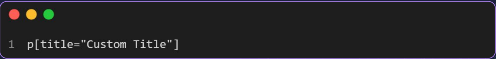
#Example of Custom Attributes:
Ques 52:How to adding Text in HTML using emmet? Give the syntax and Example of text?
Ans:Adding Text Using emmet, we may also add sentences or paragraphs inside of tags. To do this, we must write the element name inside the curly brackets "{}". The text items can be added within these curly brackets "{}" .
#Syntax to adding Text using emmet:
#Example to adding Text using emmet:
Ques 53:How to adding Parent-child using emmet in HTML? Give the Syntax and Example of Parent-child?
Ans: Emmet allows you to specify children for your elements by using the child operator >. Applying this will create an element inside of another one, as many levels deep as you require.
#Syntax of Parent-child:
#Example of Parent Child:
Note:Kindly Note that the element to the left of > will act as the parent for the element to the right of > .
Ques 54:How to adding Sibling-child using emmet in HTML? Give the syntax and Example of Sibling-child?
Ans: We can give HTML sibling tags by using emmet. (Elements that have the same parent are considered siblings.) To accomplish this, we must insert + symbols between tags.
#Syntax of Sibling-child:
#Example of Sibling-child:
Ques 55:How to adding Multiplication-child using emmet in HTML? Give the Syntax and Example of Multiplication-child?
Ans: We now know how to include a child inside of a tag. But what if we need to put more children inside the tag (all with the same tag)? In certain circumstances, tag multiplication is an option. After the tag that needs to be multiplied and before the number of repetitions, we need to add a * .
#Syntax of Multiplication:
#Example of Multiplication:
Ques 56:How to adding Grouping-child using emmet in HTML? Give the Syntax and Example of Grouping-child?
Ans: Emmet can be used to group HTML tags. To accomplish this, a bracket must be placed around the tags that will be gathered () .
#Syntax of Grouping-child:
#Example of Grouping-child:
Ques 57:What is headings tag in HTML? Explain in details? Give the Example and Output of heading?
Ans: There are six different HTML headings which are defined with the "h1" to "h6" tags, from highest level "h1" (main important heading) to the least level "h6" (least important heading).
* HTML headings are defined using the h1 to h6 elements. They are used to structure the content of a webpage, and they also help search engines understand the hierarchy of the content on the page.
* Browsers display the contents of headings in different sizes. The exact size at which each browser shows the heading can vary slightly. Users can also adjust the size of the text in their browser.
* Headings are used for highlighting important topics.
* They provide valuable information and tell us about the structure of the document.
* We can use "h1" to "h6" tag the different sub-heading with their paragraphs if required.
#Heading of Example:
#Heading of Output:
Ques 57:What is Paragraph tag in HTML? Explain in details?
Give the Example and Output of Paragraph tag?
Ans: In HTML, you can use the "p" element to represent a paragraph.
* A paragraph always starts on a new line, and is usually a block of text.
* The "p" tag also supports the Global Attributes in HTML.
* Here is an example of how to use the "p" Paragraph element.
#The Example "p" tag also supports the Event Attributes in HTML:
#Here is a Output to use the "p" Paragraph element:
Ques 58:What is the Text Formatting in HTML? Explain in details? Give the Various examples and output of Text formatting?
Ans:Definition: Text formatting in HTML refers to the way in which you can control the appearance of text on a web page. This can include things like making text bold or italic, changing the font or font size, and aligning text.
# HTML formatting is a process by which we style our content to make it more informative and attractive by using different types of HTML formatting tags. There are more than 13 HTML formatting tags presented to us. HTML formatting tags allow us to style text without using CSS.
# Through text formatting tags in HTML, we can make our content more attractive. We use HTML formatting tags to tell the browser how our content should be displayed. HTML formatting allows us to style our text in various ways. For example in the image below, we have used formatting tags to display bold, italic, superscript, and subscript text.
#Various Example of Text Formatting:
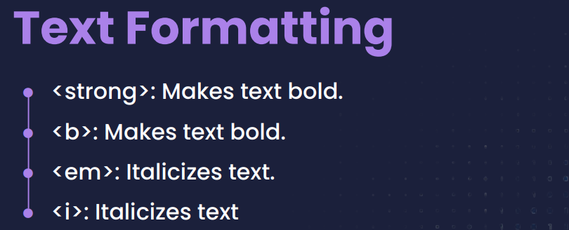
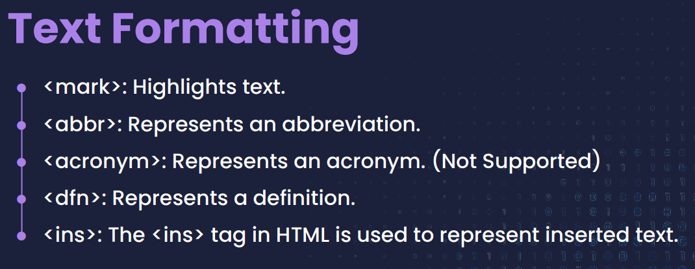
#Output of Text Formatting:
#Definition of All Text Formatting:
strong :
* "strong" is a logical tag, which tells the browser that the text is important.
* The HTML "strong" element defines text with strong importance. The content inside is typically displayed in bold.
* "strong" tags are non void elements so they must have a closing tag.
b (bold) :
* "b" (bold) is a physical tag, which is used to bold the text written between it.
* The HTML "b" element defines bold text, without any extra importance.
* "b" tags are non void elements so they must have a closing tag.
Syntax of "b" and "strong" tag:
Example of "b" and "strong" tag:
Output of "b" and "strong" tag:
em (emphasize) :
* "em" (emphasize) is a logical tag which is used to display content in italic.
* The HTML "em" element defines emphasized text. The content inside is typically displayed in italic. "em" tags are used to write in italic font.
* "em" tags are non void elements therefore they must have a closing tag.
i (italic) :
* "i" (italic) is a physical tag which is used to make text italic.
* The HTML "i" element defines a part of text in an alternate voice or mood. The content inside is typically displayed in italic.
* "i" (italic) tags are non void elements therefore they must have a closing tag.
Syntax of "em" and "i" tag:
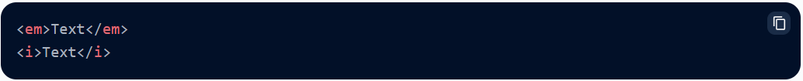
Example of "em" and "i" tag:
Output of "em" and "i" tag:
u (underline) :
* "u" (underline) tag is used to underline text written between it.
* Underline tags are used on important words which require the attention of readers or can be used to underline headings or subheadings. It is used to underline a word.
* "u" tag is a non-void element therefore it must have a closing tag.
Syntax of "u" underline tags:
Example of "u" underline tag:
Output of "u" underline tag:
strike :
* In HTML4 "strike" tag is used to put a horizontal line through words. It can be used in articles to show that some items are deleted or updated from a list or article.
* "strike" tags are non void elements therefore they must have a closing tag.
NOTE: "strike" tag is not supported in HTML 5. We can use "s" or "del" instead.
s :
* In HTML5 "s" tag is used to write striked text. It is used when a word is no longer relevent or requierd in an article. We should not use "s" tag.
* "s" tag are used to put a horizontal line through a word.
* "s" tags are non void elements therefore they must have a closing tag.
del :
* "del" tag is used to display the deleted content.
* "del" tags are non void elements therefore they must have a closing tag.
Syntax of "s", "strike", "del" tags:
Example of "s", "strike", "del" tags:
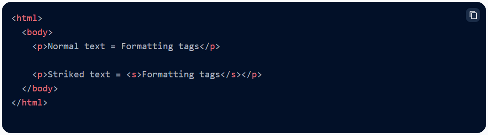
Output of "s", "strike", "del" tags:
sub :
* A "sub" (Subscript) is a letter, symbol or a number which is usually in a smaller font size and half a character below the normal line. Subscript tags are used to write chemical formulas like H20, N2O in below given. Here 2 is a subscript.
Syntax of "sub" tags:
Example of "sub" tags:
Output of "sub" tags:
sup :
* A "sup" (Superscript) is a number, letter or symbol which is usually in a smaller font size and half a character above the normal line. Superscript tags are used to write mathematical equations like x2 + y2. Here 2 is a superscript.
Syntax of "sup" tags:
Example of "sup" tags:
Output of "sup" tags:
del (Delete):
* When we have to update something in our article we use delete tag. Delete tag is used for text which is no longer required or has to be deleted. Browsers render deleted text as strike-through text.
* Delete tags are used to remove words.
* This tag is used to display the deleted content.
* "del" tag is non void elements therefore they must have a closing tag.
ins (Insert):
* When we have to update something in our article we use insert tags. While "ins" tag is used to insert updated or new text in the article. Text enclosed by "ins" tag is renderd as underlined text by browsers.
* insert tags is used to add words.
* "ins" tags are non void elements therefore they must have a closing tag.
* This tag displays the content which is added.
Syntax of "del" and "ins" tags:
Example of "del" and "ins" tags:
Output of "del" and "ins" tags:
big :
* HTML "big" tag makes the font of text one size bigger than the surrounding text i.e from small to medium, medium to big.
* Big tag is used to make the font one size bigger.
* "big" tag is used to increase the font size by one conventional unit.
* "big" tag is non-void elements therefore they must have a closing tag.
*Note: Big tag is not supported in HTML5 while the small tag is.
small :
* HTML "small" tag makes font of text one size smaller than the surrounding text i.e from big to medium, medium to small.
* small tag is used to make the font size smaller than the default font size.
* "small" tag is used to decrease the font size by one unit from base font size.
* "small" tags are non-void elements therefore they must have a closing tag.
Syntax of "big" and "samll" tags:
Example of "big" and "samll" tags:
Output of "big" and "samll" tags:
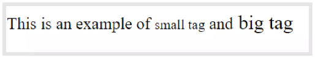
mark :
* The HTML "mark" element defines text that should be marked or highlighted.
Syntax of mark tag:
Example of mark tag:
Output of mark tag:
acronym or abbr:
* An "acronym" or "abbr" (abbreviation) should be marked up with the "abbr" tag.
* The "acronym" tag in HTML is used to define the acronym. The "acronym" tag is used to spell out another word. It is used to give useful information to browsers, translation systems, and search-engines. "acronym" tag is not supported in HTML 5 otherwise use "abbr" Tag.
*title : "title" is used to specify extra information about the element. When the mouse moves over the element then it shows the information.
Syntax of "acronym" tag:
Syntax of "abbr" tag:
Example of "abbr" tag:
Output of "abbr" tag:
dfn :
* The "dfn" tag stands for the "definition element", and it specifies a term that is going to be defined within the content.
* The nearest parent of the "dfn" tag must also contain the definition/explanation for the term.
Syntax of "dfn" tag:
Example of "dfn" tag:
Output of "dfn" tag:
Ques 59:What is Block-level Element? Explain all Block- level element. Give the Example and Output of Block-level Element?
Ans: A Block-level element occupies the entire horizontal space of its parent element (container), and vertical space equal to the height of its contents, thereby creating a "block". Browsers typically display the block-level element with a newline both before and after the element.
* A block-level element always begins on a new line, and browsers add a margin (a space) before and after the element by default.
* A block-level element always occupies the entire available width (stretches out to the left and right as far as possible).
#There are various Examples of Block-level Element are given below:
#Output of Block-level-Element:
#Example of Block-level-Element:
#Output of Block-level-Element:
address tag :
* The "address" tag defines the contact information for the author/owner of a document or an article. The contact information can be an email address, URL, physical address, phone number, social media handle, etc. The text in the "address" element usually renders in italic, and browsers will always add a line break before and after the "address" element.
* The "address" tag in HTML indicates the contact information of a person or an organization. If "address" tag is used inside the "body" tag then it represents the contact information of the document and if the "address" tag is used inside the "article" tag, then it represents the contact information of the article. The text inside the "address" tag will display in italic format. Some browsers add a line break before and after the address element.
#Syntax of address tag:
#Example of address tag:
#Output of address tag:
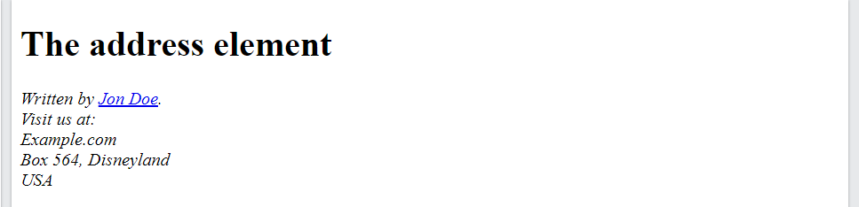
article tag :
* The "article" tag specifies independent, self-contained content. An article should make sense on its own and it should be possible to distribute it independently from the rest of the site.
*This tag is most often used in two contexts:
* On a page with a single piece of content, a single "article" element can be used to contain the main content and set it off from the rest of the page.
* On a page with multiple pieces of content (a blog index page, a search results page, a category page, news feed), multiple "article" elements can be used to contain each individual piece of content
*Note: This tag does not render as anything special in a browser, you have to use CSS for that (article).
*Potential sources for the "article" element is:
A forum post
A Blog post/entry
A magazine/newspaper article/story
A user-submxitted a comment
Default CSS setting: Most browsers will display the Article element with the following values.
Syntax of article tag:
Example of article tag: Using inline styling in an article element
Output of article tag:
aside tag :
* "aside" vs "div": Both tags have the same behavior with a different meanings.
* "aside": It does the same job by creating a section or division but it contains only the content that is related to the main web page.
* "div": It defines or creates a division or section in the web page.
* The "aside" tag is used to describe the main object of the web page in a shorter way like a highlighter. It basically identifies the content that is related to the primary content of the web page but does not constitute the main intent of the primary page. The "aside" tag contains mainly author information, links, related content, and so on.
* The "aside" tag makes it easy to design the page and it enhances the clarity of the HTML document. It let us easily recognize the main text and subordinate text. In both the time "div" and "aside" need CSS for specific design. The "aside" tag supports Global attributes and Event attributes in HTML.
*NOTE: The "aside" tag is new in HTML5. This tag does not render anything special in a browser you have to use CSS for that.
*Syntax of aside tag:
*Example of HTML aside tag:
*Output of HTML aside tag:
*Example of using CSS in HTML aside tag:
* Output of using CSS in HTML aside tag:
blockquote tag :
* The "blockquote" tag in HTML is used to display long quotations (a section that is quoted from another source). It changes the alignment to make it unique from others. It contains both opening and closing tags. In blockquote tags, we can use elements like headings, lists, paragraphs, etc.
*Attribute: It contains a single attribute cite which is used to specify the source of the quotation.
*Note: The "blockquote" tag in HTML4.1 defines the long quotation i.e. quotations that span multiple lines. But in HTML5, the "blockquote" tag specifies the section that is quoted from other sources.
#Syntax of blockquote tag:
#Example_1 of blockquote tag:
#Output_1 of blockquote tag:
#Example_2 of blockquote tag:
#Output_2 of blockquote tag:
canvas tag :
* The HTML "canvas" element is only a container for graphics. You must use JavaScript to actually draw the graphics.
* Canvas has several methods for drawing paths, boxes, circles, texts, gradients, and adding images.
* it does not contain borders and text.
* The "canvas" tag is new in HTML5.
dd tag :
* The "dd" (definition description) tag is used to describe a term/name in a description list.
* The "dd" tag is used in conjunction with "dl" (defines a description list) and "dt" (defines terms/names).
* Inside a "dd" tag you can put paragraphs, line breaks, images, links, lists, etc.
* The "dd" tag in HTML stands for definition description and It is used to denote the description or definition of an item in a description list. Paragraphs, line breaks, images, links, lists can be inserted inside a "dd" tag. The "dd" tag in HTML is used along with "dl" tag which defines the description list and "dt" tag which defines the terms in the description list. The "dd" tag requires a starting, but the end tag is optional.
#Syntax of dd tag:
#Example 1: Below programs illustrate the "dd" element in HTML.
#Output 1: Below programs illustrate the "dd" element in HTML.
div tag :
dl tag :
dt tag :
fieldset tag :
Ques 60:What is Inline-level Element? Explain all Inline-level-element. Give the Example and Output of Inline-level Element?
Ans: Inline elements are those which only occupy the space bounded by the tags defining the element, instead of breaking the flow of the content.
* A line break is not used to begin an inline element.
* An inline element only uses the space that is required.
* An inline element cannot contain a block-level element.
* Note: An inline element does not start on a new line and only takes up as much width as necessary.
#There are various Examples of Inline-level Element:
#Output of Inline-Level-Element:
#Example of Inline-Level-Element:
#Output of Inline-Level-Element:
Ques 61:What is Nested/Nesting in code?
Ans: When we write codes to many tags inside one tag, then this phenomenon is called nesting and nested tags in the language of programming.
#Example of Nested/Nesting code:
#Output of Nested/Nesting code:
Ques 62:Introduce Images into Website in html?
Ans: Images are a common element of web design, and they serve a number of different purposes on websites.
Ques 63:What are some of the main uses of images on website in html?
Ans:Some of the main uses of images on websites include:
Visual appeal
Branding
Illustration
Navigation
Ques 64:What is the basic Synatx of the image (img) tag attribute? And also give the Example of the image (img) tag attribute?
Ans: To include an image in an HTML page, you can use the "img" element. The "img" element is a self-closing tag, which means that it doesn't have a closing tag.
#Syntax of Images attribute:
#Example of Images attribute:
#Output of the Images attribute:
Ques 65:What are the various different image (img) tag attributes in HTML?
Ans:There are various image (img) attribute in html, in below mention:
img
src
alt
height
width
title
Ques 66:What are the types of the lists in HTML?
Ans:Three types of lists in HTML are:
Ordered list
Unordered list
Description list
Ques 67:What is Ordered List in HTML? Give the Example and Output of Ordered lists?
Ans: An ordered list in HTML is a list of items that are displayed in a specific numerical or alphabetical order. Ordered lists are created using the "ol" element in HTML, and each item in the list is represented by an "li" element.
#Example of Ordered List:
#Output of Ordered list:
Ques 68:What are the Kind of the markers for the Ordered list in HTML?
Ans:There can be 5 kinds of markers for the ordered list:
Numbers [ 1 ]
Lowercase Alphabets [ a ]
Uppercase Alphabets [ A ]
Lowercase Roman Numbers [ i ]
Uppercase Roman Numbers [ I ]
NOTE: The markers can be applied both on "ol" and "li" tags using the type attribute.
Ques 69:What is the Unordered list in HTML? Give the Example and Output of Unordered Lists?
Ans: An unordered list in HTML is a list of items that are displayed in no specific order. Unordered lists are created using the "ul" element in HTML, and each item in the list is represented by an "li" element.
Example of Unordered List:
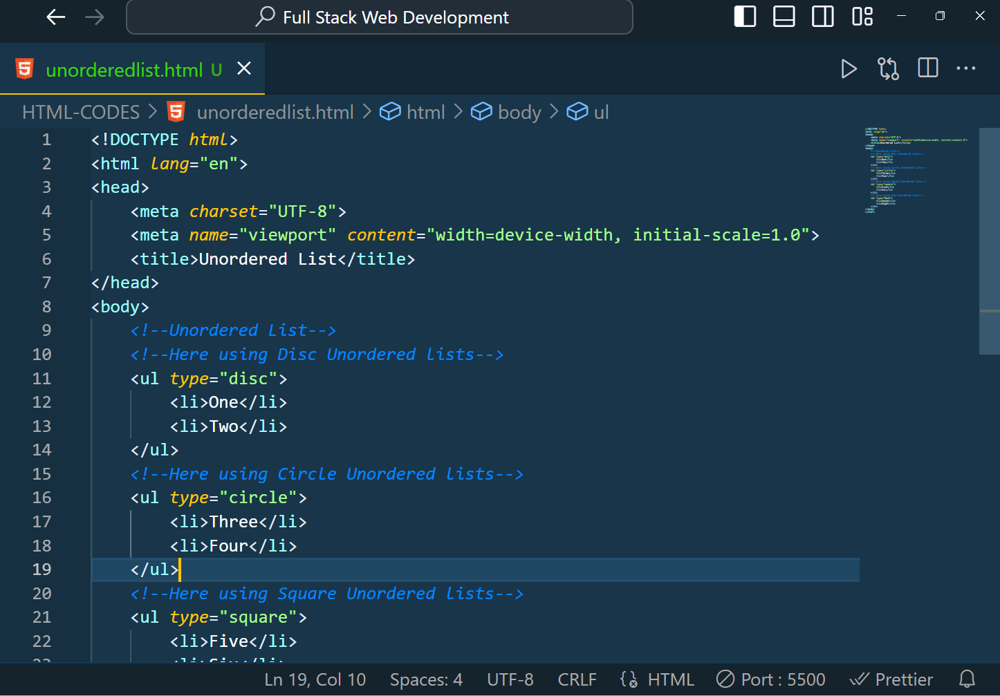
Output of Unordered List:
Ques 70:What are the kind of the markers for the Unordered lists?
Ans:There can be 4 kinds of markers for unordered lists:
disc
circle
squre
None
NOTE: The markers can be applied both on "ul" and "li" tags using the type attribute.
Ques 71:What is the Description List (dl) in HTML? Give the Example and Output of Description lists in HTML?
Ans: A description list in HTML is a way to display a list of terms and their corresponding descriptions. It is similar to a dictionary, where each term is followed by its definition. Description lists are created using the "dl" element, with each term represented by an "dt" element and each description represented by an "dd" element.
Example of Description list:
Output of Description List:
Ques 72:Introduction to Interlinking (Links) in HTML? How to using interlinking web pages and navigate people to other websites? Give the Example and Output of linkings (Links) in HTML?
Ans: Links (also known as hyperlinks) are used in websites to allow users to navigate from one web page to another. When a user clicks on a link, they are taken to the destination page specified by the link.
#When you click on the Google link, The Google.com page will open on the same pag:
#Here Output of Interlinking:
#When you click on the Amazon link, Amazon.com page will open on another page. because of using here target = "_blank" attribute.Here Example of Interlinking:
#Here Output of Interlinking:
#When you click on the Download link, you can download pdf, hello.html file links directly using attribute, because here using download attribute. Here Example of Downlaod Attribute:
#Here Output of Download Attribute:
#When you click on the Flipkart, Zomato, Myntra, Same Web Site, Mail me links, etc. pages/websites will be open on the same page, because here using target="self" , "parent" , "top" attribute. Here Example of Attribute:
#Here Ouput of using attribute:
Ques 73:Introduction to Lists in HTML?
Ans:A list is a group of related items that are displayed in a specific order. Lists are useful in websites for several reasons:
Lists can help to organize content in a clear and logical way, making it easier for users to understand and navigate.
Lists can be used to break up large blocks of text and make the content more visually appealing and easier to read.
Lists can be used to highlight important points or information, making it easier for users to find and reference specific pieces of content.
Lists can be used to create navigation menus, allowing users to easily move between different pages or sections of a website.
We encounter lists during multiple situations on a daily basis. Lists are useful for many things, including grocery shopping and creating a daily routine. Similar instances can be found on websites. The HTML lists utility assists us in creating lists on websites
Ques 74:What are the Use Cases for Linking (Link) in HTML?
Ans:The Various use Cases for links / Linking in HTML are:
Navigation
External references
Downloadable content
E-commerce
Social media
Ques 75:What is anchor tag attribute in HTML? Give the Syntax, Example and Output of anchor tag attribute in html?
Ans: The "a" element, also known as the anchor tag, is used in HTML to create a hyperlink. The "a" element allows you to specify the destination of the link using the href attribute.
#Syntax of "a" anchor tag attribute
#Example of "a" anchor tag attribute
#Output of "a" anchor tag attribute
Ques 76:How to open email using anchor tag attribute in html? Give the Syntax, example and Output of open email using anchor tag attribute in html?
Ans: Links can also be used to open emails using anchor tag attribute.
#Here is an Syntax of a link that opens an email client:
#Here is an Example of a link that opens an email client:
#Here is an Output of a link that opens an email client:
Ques 77:How to download pdf files using anchor tag attribute in html? Give the Syntax, example and output of dowwnload pdf file using anchor tag attribute in html?
Ans: Links can also be used to download files using anchor tag attribute.
#Here is an Syntax of a link that allows the user to download a file:
#When you click on the Download link, you can download pdf, hello.html file links directly using attribute, because here using download attribute. Here Example of Downlaod Attribute:
#Here is an Output of a link that allows the user to download a file:
Ques 78:What are the various attributes using in HTML? Explain in "href", "target="_blank", "download", "title"? Explain the various target values using in HTML? Give the Syntax, Example and Output of various traget attributes using in html?
Ans:There are various Attributes using in HTML:
href: href stands for hypertext reference. It's the source of the file used by the tag.
target: The target attribute specifies the tab or window in which the linked page or the form response will open.
A linked page can be opened in the same tab, a new tab, a new window, or an iframe.
If target is not set, the link will open in the same tab/window as the current page.
There are various target values using in html:
_self: Opens the page in the same tab/window. This is the default.
_blank: Opens the page in a new tab.
_parent: Opens the page in the parent iframe. In the same iframe if there is no parent.
_top: Opens the page in the top level frame which always is the full browser tab/window.
framename: Opens the page in a named iframe.
download: This attribute specifies that the linked document should be downloaded rather than opened in the browser.
title: This attribute specifies a short description of the link, which is often displayed as a tooltip when the user hovers over the link.
Ques 79:Difference Between Inline and Block level elements in HTML?
Ans: Block elements always start from a new line. Inline elements never start from a new line. Block elements cover space from left to right as far as it can go. Inline elements only cover the space as bounded by the tags in the HTML element.
Ques 80:How to work with images in HTML and explain in detail "img" tag important and attributes?
Ans: The "img" tag creates a holding space for the referenced image.
* The "image" tag has two required Attributes:
Src- specifies the path of the image.
Alt - Specifies an alternate text for the image, if the image for some reason cannot be displayed. You can add border edit size of image by using many attributes as border, height, space, width etc..
Ques 81:How to create a list in HTML?
Ans:
Chai
Pani
Namkeen
Ques 82:How to interlink web pages and navigate people to other websites?
Ans: We interlink web pages and navigate to other website by:
Give a title to the text you'd like to link.
Put the title into an opening html anchor link tag.
Insert the anchor tags around the text you want to link to.
Create a hyperlink that leads you to the text.
Ques 83:Introduction to HTML Media/Video in HTML?
OR,Explain all Media/Video elements and how they work?
Ans: Websites in the present-day scenario are not just built to showcase the content. Web developers and website owners want to make their websites more attractive and interactive. Considering this, the media in the websites are gaining popularity day by day. In Fact these days one of the most important things on the internet is the media.
* Video, Audio, Images are Support HTML Media.
Ques 84:What are many potential uses for adding video tag to a websites in html?
Ans:There are many potential uses for adding video to a website:
Educational content
Marketing and advertising
Entertaining and engaging visitors
Providing customer support
Improving SEO
Ques 85:How to add a video tag to a Web Page in HTML? Give the Syntax, Example and Output of Video tag to a Web page in HTML?
Ans: To add a video to a web page, you can use the "video" element.
* You can also specify the width and height of the video using the width and height attributes.
* You can also add multiple sources for the video using the "source" element, in case the browser does not support the first source
* First way using, to add a video to a web page, you can use the "video" element.
#First way using video tag Syntax here:
#First way using video tag Example here:
#Second way using video tag Syntax here:
#Second way using video tag Example here:
Ques 86:Which attributes are used in video element?
Ans:There are many attributes used in video element:
src
controls
muted
unmuted
autoplay
width
height
Ques 87:Introduction to HTML Audio in Web pages?
Ans: We often see many websites, especially blogging sites with an audio player in them. These audio players play the audio description of the blog. This is very important when it comes to websites that have content to tell in a story format or a website where the owner wants to share his thoughts with the audience over voice.
* HTML provides a way to play audio on web pages through the "audio" element. The "audio" element is a self-closing tag, meaning it does not have a closing tag, and it is used to embed audio files in web pages.
* The "audio" tag creates an audio player on a web page. Along with playing the audio, it supports media controls, like play, pause, volume, and mute. The browser will choose the first file with a file format that it supports. Supported audio file formats include MP3, WAV, and OGG.
* The text between the "audio" and "audio" tags will only be displayed in browsers that do not support the "audio" element.
*HTML Source Tag: Some browsers or hardware don't support audio tag or audio formats. To handle this sometimes we provide multiple audio types to the audio tag and let the browser display what must be played. This can be done by the source tag.
Ques 88:How to add a Audio tag to a web page in html? Give the Syntax , Example and Output of Audio tag to a web page in html?
Ans: The text between the "audio" and "audio" tags will only be displayed in browsers that do not support the "audio" element.
* Some browsers or hardware don't support audio tag or audio formats. To
handle this sometimes we provide multiple audio types to the audio tag and let
the browser display what must be played. This can be done by the source tag.
Ques 89:Which attributes are used in Audio tag in html?
Ans: There are many attributes used in Audio element (tag) in html:
src
controls
muted
unmuted
autopaly
Ques 90: Why do we start learning a programming language with “Hello World!”?
Ans: Traditionally, Hello World programs are used to illustrate how the process of coding works, as well as to ensure that a language or system is operating correctly. They are usually the first programs that new coders learn, because even those with little or no experience can execute Hello World both easily and correctly.
Ques 92:Explain the table and its properties?
Ans: Web developers can organize information like text, images, links, and other.
data into rows and columns of cells using HTML tables.
* The "table" tag is used to generate HTML tables T.
* Table rows are created using the "tr" tag, while data cells are created using
the "td" tag. Regular elements beneath "td" are by default left aligned.
*properties of tables are…
#Table Heading
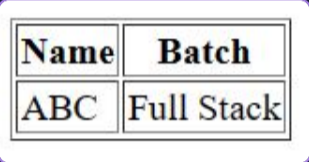
#Cell padding and spacing
#Colspan and rowspan
#Table Background
#Table height and width
#Table caption
#Table header, Body, Footer
#Example of Table (Code in html)
#Output of Table (Code in html)
Ques 93:What are HTML Forms?
Ans: A portion of a page known as an HTML form contains controls including text
fields, password fields, checkboxes, radio buttons, a submit button, menus,
etc are HTML forms.
# An HTML form makes it easier for the user to input data like name, email
address, password, phone number, etc. that may be transferred to the server
for processing.
Ques94:Why use HTML Forms?
Ans: If you wish to collect data from a site visitor, HTML forms are necessary.
# For instance, if a user wants to buy something online, he or she must fill out the
form with the shipping address and credit/debit card information so that the
item may be delivered to the specified address.
Ques 95:What are HTML Input types different tags and provisions in Forms?
Ans:HTML Input types different tags and provisions in Forms mention in below:
Ques 96:A sample registration form?
Ans: A sample registration form:
Ques 97:What is Get Method in HTML? Give the Syntax and Example?
OR,What is Get in Form?
Ans: After submitting the form, the GET method displays form values in the address bar of the new browser tab.
# It is only allowed to be roughly 3000 characters long. Only non-secure data. It is not sensitive data, it can be used with it.
#Syntax of get_method_in_HTML:
#Example of get_method_in_HTML:
Ques 98:What is Post Method in HTML? Give the Syntax and Example?
OR,What is Post in Form?
Ans:Syntax of post_method_in_HTML:
#Example of post_method_in_HTML:
Ques 99:Introduction to HTML input? Explain all Input tag Attributes?
OR,List all the Input types we have in forms?
Ans: In HTML we use input tags to collect user inputs. Input tags are one of the most powerful tags in HTML considering their combinations of input types and attributes.
#list of Input tag attributes:
Placeholder: To provide some hint on what must be entered in the input box we use an input tag with the placeholder attribute. Placeholder value is displayed only when the input tag is not holding any value. As soon as the user starts entering data, the placeholder disappears.
value: It defines the initial value and later can be changed by the user.
readonly: On having the readonly attribute the users cannot change the value of the input field but can have a look at the value for information or review purposes.
Disabled: Disabled attribute is used to specify to the users that the input tag or field is no longer accepting changes in its value and the value is displayed just for review or information purpose.
name: The name attribute specifies the name of an "input" element. We use the name attribute as a reference to collect data from an input field when the form is submitted. It's a mandatory attribute for a form to work.
size: The size attribute specifies the visible area / width of the input field.
autofocus: The autofocus attribute specifies that an "input" element should automatically get focus when the page loads.
min: The min attribute specifies the minimum value the input field should contain.
max: The max attribute specifies the maximum value the input field will accept.
multiple: The multiple attribute specifies that the user is allowed to enter more than one value in the "input" element. This attribute works only with input type file and email.
maxlength:
type:
Ques 100:Introduction to Semantic HTML?
OR,What is Semantic HTML?
Ans: In HTML, semantic tags are tags that describe the meaning or purpose of the content they contain. Semantic tags are used to add meaning to the content of a webpage, making it easier for search engines and other
systems to understand the content of a webpage.
Ques 101:What are Semantic elements/tags? Give a couple of examples of Semantic elements/tags?
OR,Introduction to Semantic elements? Give a couple of examples of Semantic elements/tags?
Ans: Semantic elements have proper names that indicate the nature of the content.
* For instance, a table, footer, header, etc.
*Semantic HTML tags are tags that define the meaning of the content they contain
* HTML5 provides a number of semantic components that help developers create and comprehend code more easily and give browsers guidance on how to handle certain elements.
* For example, tags like "header", "article", "footer" , "aside" , "details/summary" are semantic HTML tags. They clearly indicate the role of the content they contain. Semantic tags also known as Self explain nature.
Ques 102:What are the different semantic elements/tags?
OR,List some uses of semantic tags/elements?
Ans:
article: It contains independent content and doesn't require other context. Example: Blog Post, Newspaper Article etc.
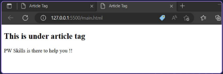
aside:It is used to place content in a sidebar i.e. aside from the existing content
details/summary:“details” tag defines additional details that the user can hide/view. “summary” on the other hand defines the visible heading for a “details” element.
footer:Footer is located at the bottom of any article or document which can contain contact details, copyright information etc. There can be multiple footers on a page.
header:It is for the introduction heading of a page. There can be multiple headers on a page.
main:It defines the main content of the document. The content inside main tag should be unique.
mark:It is used to highlight the text
nav:It is used to define a set of navigation links in the form of the navigation bar or nav menu
section:A page can be split into sections like Introduction, Contact Information, Details, etc and each of these sections can be in a different section tag.
figcaption:
figure:
Ques 103:What are several advantages to usings semantic elements/tags in HTML?
Ans:There are several advantages to usings semantic tags in HTML?
Improved readability and maintainability
Enhanced accessibility
Enhanced accessibility
Simplified styling
Ques 104:What are the Semantic HTML can be applied in a variety of contexts?
Ans:Semantic HTML can be applied in a variety of contexts, including:
Websites
Web applications
E-commerce platforms
Blogs and content management systems
Ques 105:What are the new things introduced in HTML5?
Ans: Audio and Video tags are the two major additions to HTML5. It allows developers to embed a video or audio on their website. HTML5 video can use CSS and CSS3 to style the video tag. You can change the border, opacity, reflections, gradList some uses of semantic tags. transitions,transformations, and even animations. HTML5 makes adding video super-fast and without having to build a video player. This saves time for the developer and offers the client a superior and more affordable solution.